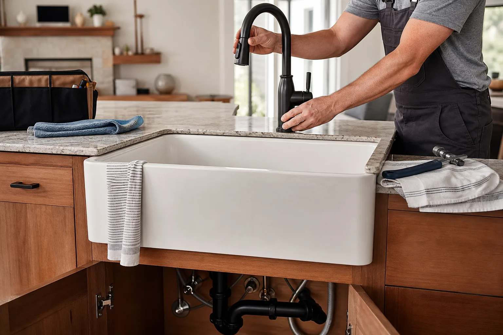

Fixture Connections for the Wettest Part of the Kitchen
Sink and faucet work can involve countertop openings, water lines, disposal connections, drains, shutoff valves, and leak prevention. We help route requests toward independent providers.
Fixture Work May Include
Plumbing-related remodel work should be checked carefully because small leaks can create expensive damage.
- Sink replacement, faucet installation, soap dispenser, filtered water faucet, or pot filler planning.
- Drain assembly, garbage disposal replacement, trap alignment, shutoff valves, supply lines, and leak testing.
- Coordination with countertop cutouts, cabinet base modifications, dishwasher air gap, and under-sink storage.
- Questions about licensed plumbing requirements, permits, warranties, water shutoff, and cleanup.
Leak Prevention
Ask how connections are tested, what parts are replaced, and how long the provider monitors after installation.
Fixture Fit
Confirm faucet hole count, sink dimensions, mounting style, countertop material, disposal fit, and cabinet clearance.
Licensed Scope
Verify whether plumbing work must be performed by a licensed provider in your local area.
Tell Us What Needs Replacing
Share the sink type, faucet type, current issue, and whether this is part of a countertop or cabinet project.
- Add photos of the current kitchen.
- Include rough measurements or room size.
- Share timing, budget range, and priorities.


Fixture Work Needs Fit, Access, and Leak Testing
Sink and faucet projects often connect to countertop openings, cabinet space, disposal parts, shutoff valves, and drain alignment. Clear photos help providers understand the scope.
Prepare Before Contact
- Sink type and faucet model if selected
- Photos inside the sink cabinet
- Disposal, filter, or dishwasher connection notes
- Known leaks, shutoff issues, or drain problems
Ask the Provider
- What parts are included or supplied separately
- How connections are leak tested
- Whether countertop cutting is included
- Who handles disposal or dishwasher reconnection

Best for homeowners replacing a sink, faucet, disposal, supply lines, shutoff valves, or fixtures during a counter project.
Sink and Faucet Work Needs Fit, Access, and Leak Protection
Wet-area updates connect several pieces: sink dimensions, faucet holes, disposal, shutoff valves, drain alignment, dishwasher connections, countertop openings, and cabinet space. The better the photos, the clearer the provider conversation.
Fixture fit
Sink type, faucet hole count, dispenser holes, disposal, filters, sprayers, and cabinet clearance.
Plumbing scope
Supply lines, shutoff valves, drain assembly, traps, disposal wiring, and dishwasher connections.
Counter tie-in
Undermount support, drop-in fit, farmhouse apron needs, faucet drilling, and sealant.
Leak review
Water shutoff, testing, cleanup, warranty terms, and who responds if a connection fails.
Before You Speak With a Provider
- Photograph inside the sink cabinet with doors open and items removed.
- Note current leaks, slow drains, shutoff issues, disposal noise, or water damage.
- Ask whether countertop cutting or plumbing reconnection is included.